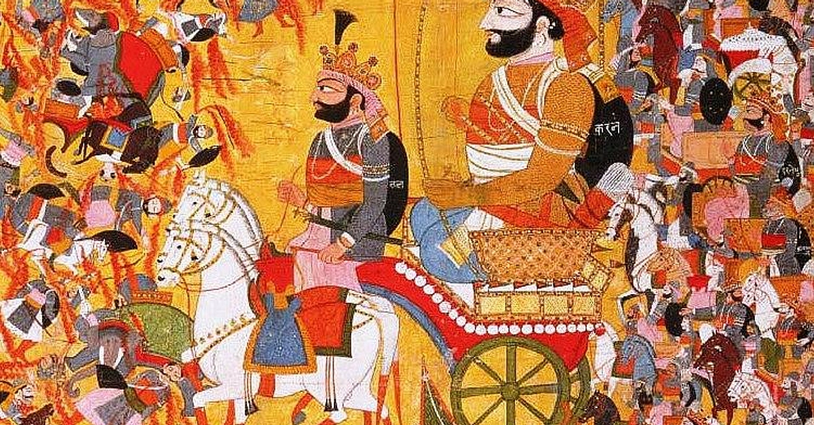

A symbol of the country’s rich past and thriving present, Delhi is a city where ancient and modern blend seamlessly together. It is a place that not only touches your pulse but even fastens it to a frenetic speed. Home to millions of dreams, the city takes on unprecedented responsibilities of realizing dreams bringing people closer and inspiring their thoughts.
Just a century ago, the British moved the seat of their empire from Kolkata to Delhi. And it has been the Capital of India ever since. Now a thriving, cosmopolitan metro, the city has much to celebrate as it has already reached the milestone of completing 100 years as a Capital. With a history that goes back many centuries, Delhi showcases an ancient culture and a rapidly modernising country.

All this is combined with the best features of a modern city such as a metro system, bustling markets and fabulous eating places. The past and the present meld seamlessly together, making centuries-old monuments a part of the city’s daily life. Delhi is very much a history’s child. The story of the city is as old as the epic Mahabharata, when the town was known as Indraprastha, where Pandavas used to live. Over the centuries, eight more cities came alive adjacent to Indraprastha: Lal Kot, Siri, Dinpanah, Quila Rai Pithora, Ferozabad, Jahanpanah, Tughlakabad and Shahjahanabad. Many empires rose to the heights of their power and were destroyed here. Among the prominent dynasties which made Delhi their capital were the Tughlaqs, the Khiljis and the Mughals.
Even today, one can have a fascinating glimpse into the past in Old Delhi, with its labyrinth of narrow lanes, old havelis, and colourful bazaars. Rickshaws wind their way through this crowded, bustling capital of the Mughals, where life continues, much as it did hundreds of years ago. It is home to three World Heritage monuments—Qutub Minar, Red Fort and Humayun’s Tomb that have survived many centuries, and give an idea of architectural wonders created by emperors in the past. Central Delhi, with its tree-lined avenues, imposing structures and buildings such as the Rashtrapati Bhavan, Parliament House and India Gate, reflect Delhi’s colonial past. A number of museums provide a glimpse into the country’s fascinating history.
But the modern Delhi has a lot more to offer. Delhi has a modern, well-planned and extensive Metro network that connects all corners of Delhi; this network is still growing. New roadways and flyovershave improved connectivity, the latest of which is the Signature Bridge, an ambitious project of Delhi Tourism, which is under construction at Wazirabad – it promises to be a landmark.
New malls and entertainment centres jostle for space with a growing number of brand new hospitals, residential complexes, and sporting facilities. Delhi is now a dream destination for those seeking expert medical attention and superior OPD and IPD facilities. Thanks to the advent of the Commonwealth Games, there are world-class stadia like the revamped Nehru Stadium that can be accessed by one and all, throughout the year. All of this has been developed and sustained while maintaining Delhi’s green cover, a unique feature that distinguishes this truly global metropolis from other cities in the world where the tree line is subdued by skyscrapers.
Besides the Metro, which connects all of Delhi’s landmarks to the city centre as well as most suburbs, the new, a fun way to explore Delhi is by booking a HOHO bus tour. Hop on- Hop off buses, better known as HO – HOs, have been introduced by Delhi Tourism for visitors who wish to tour the city in a single day. With so many transport options, visitors now have the ability to go wherever they want – and there are a lot of places to see and a lot of things to do here. There are the age old-yet-perfectly preserved, sprawling heritage complexes featuring architecture from the Mughal and Tughlaq periods.


The revamped Indira Gandhi International airport provides visitors with their first experience of a modern, world-class city which is keeping pace with the best in the world. Terminal 3, from where international and many domestic carriers operate, has facilities which are on par with the world’s most modern airports. The Airport Metro Express, which takes one to the rail station in the heart of the city, in just 17 minutes, provides easy connectivity for visitors. Whether you are travelling to Old Delhi, to Connaught Place or to Dilli Haat, the metro provides an easy way of getting around the city. The numerous flyovers, wide roads and bus and auto services also ensure that it is easy to explore the city.
New additions to the city, such as Akshardham Temple and also the Lotus Temple are also great places to visit and give an idea of its multi-faceted culture. Delhi is also gaining recognition as a cultural destination. Delhi Tourism’s major festivals namely, the International Kite Festival, Magic Festival, Itra and Sugandhi Mela, Mango Festival, Dilli ke Pakwaan, and Garden Tourism Festival are becoming an integral part of Delhi’s cultural heritage.
No visit to Delhi is complete without an experience of its famed specialties such as its delicious curries, barbecued tikkas and kebabs. It is also a shoppers’ haven, whether you want to pick up some rich, woven silks, handicrafts, or ethnic cushions for your home. For cuisine of different Indian states and an array of Indian art and craft there are three Dilli Haats in Delhi at INA, Pitampura and the brand new Dilli Haat at Janakpuri.
It is time to celebrate this city which is a symbol of the country’s rich past and thriving present. As a Capital city it is fittingly a window to the country. So come and look out of the window and discover a whole new city of numerous stories and experiences.